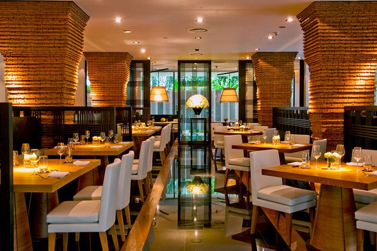

Restaurant Description:
Gabri's Lounge & Restaurant will feature an outstanding New American-Swedish menu with a touch of Asian influence in an upscale and cozy atmosphere.
The menu is inspired from different cuisine's specialties and will appeal to a wide and varied clientele.
We will offer a three course ‘business lunch' prix fixe and a three course dinner prix fixe in addition to the regular menu.
They have special Wine Tasting Evenings, a five course meal featuring new wines sponsored by our distributors. Customers can come and learn more about wine and food!
5675 N Clinton Drive Beverly Hills, CA
Telephone number: 985-8745-333